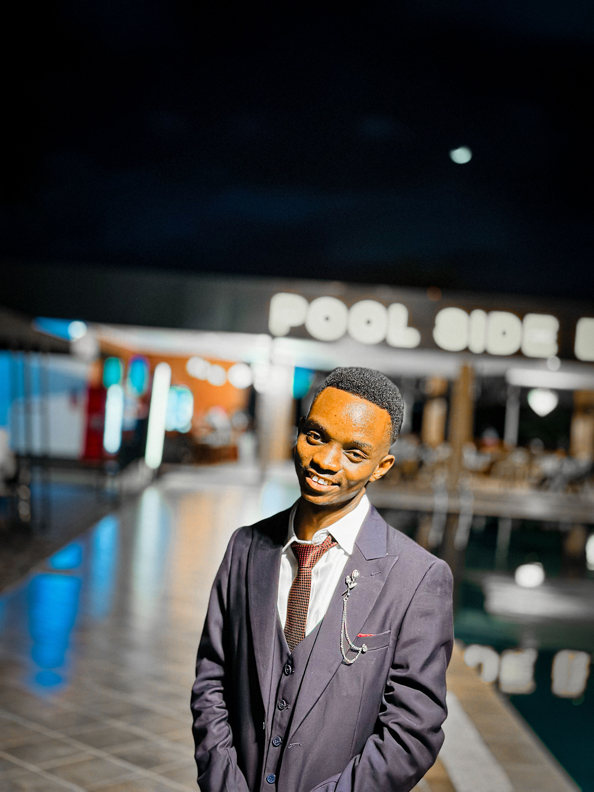

Edgar Charles
Software Developer
- Dar es Salaam, Tanzania
- +255 679 799 406
- edgarcharles360@gmail.com
- github.com/Edgar-Charz
- LinkedIn profile

Professional Summary
Computer Science graduate from the University of Dar es Salaam with practical training in software development. Interested in building reliable web and mobile applications, developing systems, and debugging software. Brings a project-based foundation in PHP, MySQL, Bootstrap, Python, Django, and Flutter.
Experience
Software Developer Trainee
Sonak Co. Ltd · Dar es Salaam, Tanzania
- Contributed to developing software systems during practical training.
- Assisted with debugging and resolving software issues.
Education
Bachelor of Science in Computer Science
College of Information and Communication Technology (CoICT), University of Dar es Salaam (UDSM)
Advanced Secondary Education
Kilangalanga Secondary School
Ordinary Secondary Education
Azania Secondary School